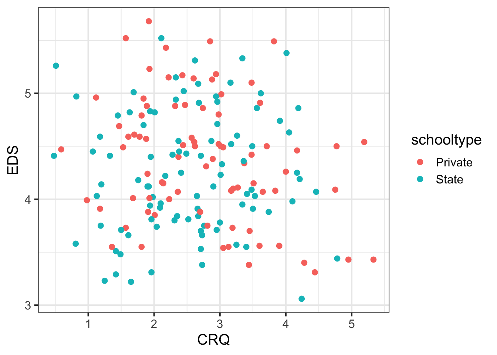
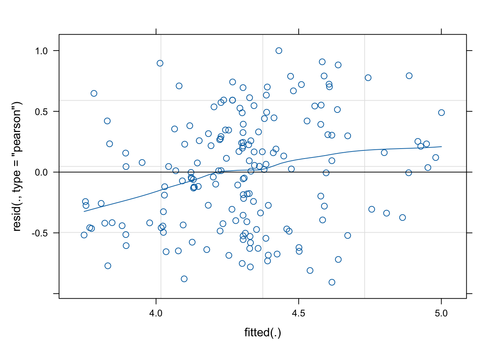
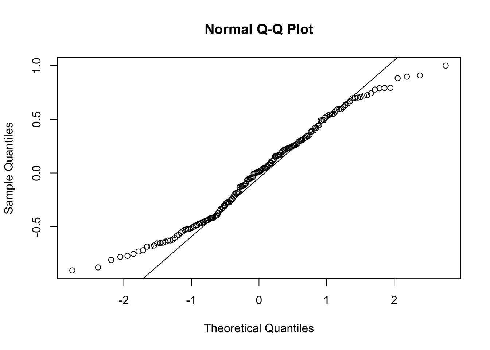
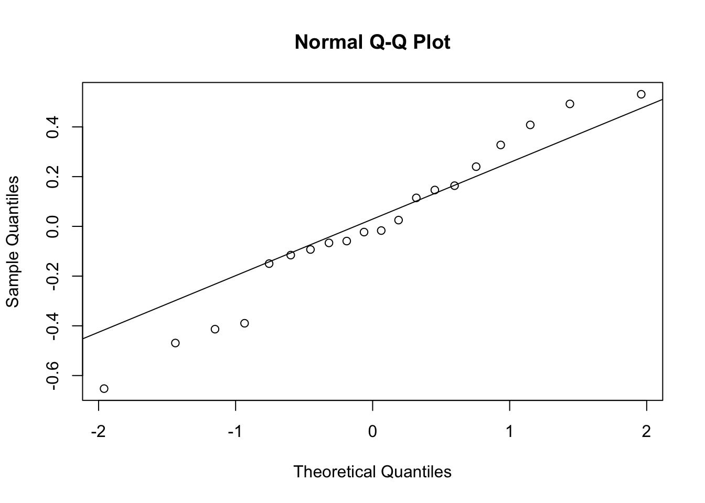
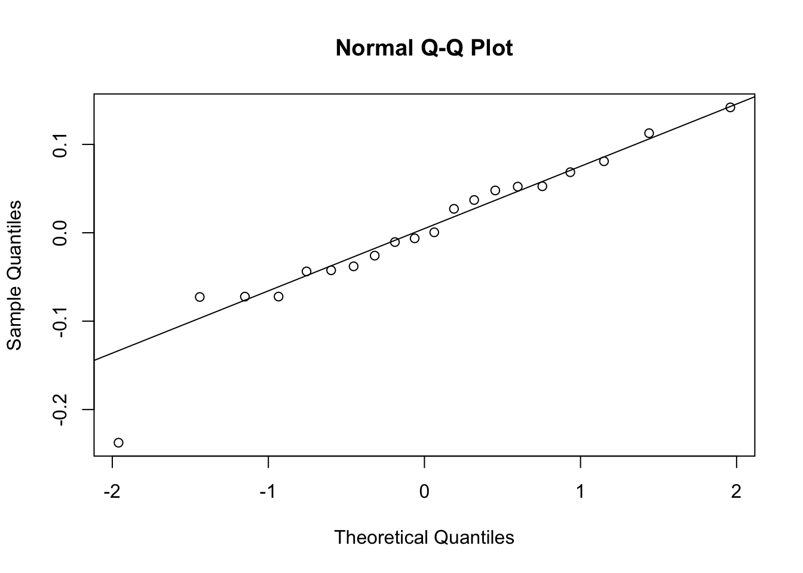
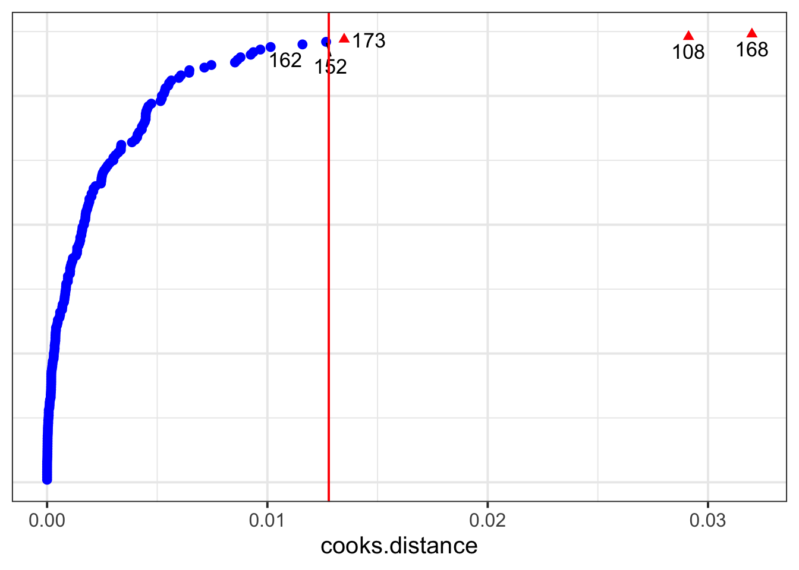
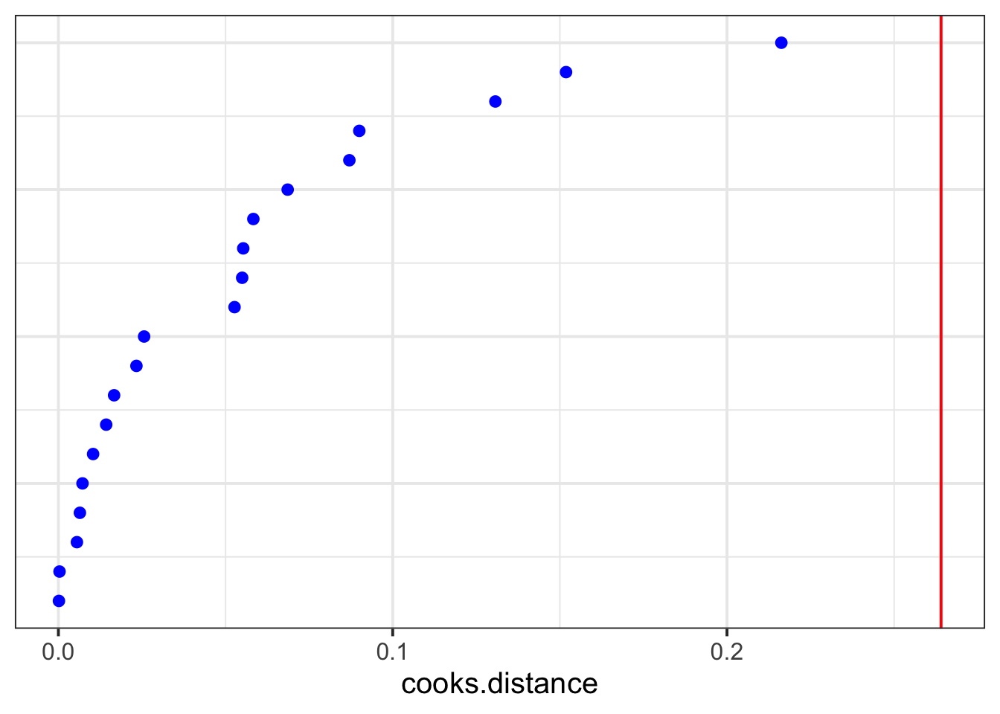
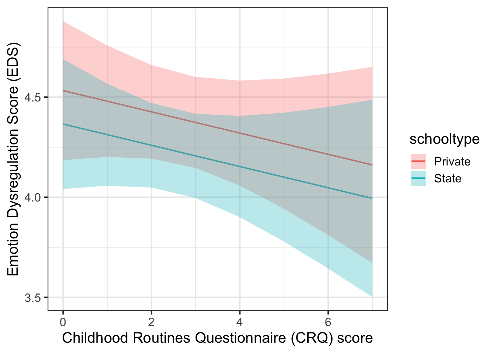
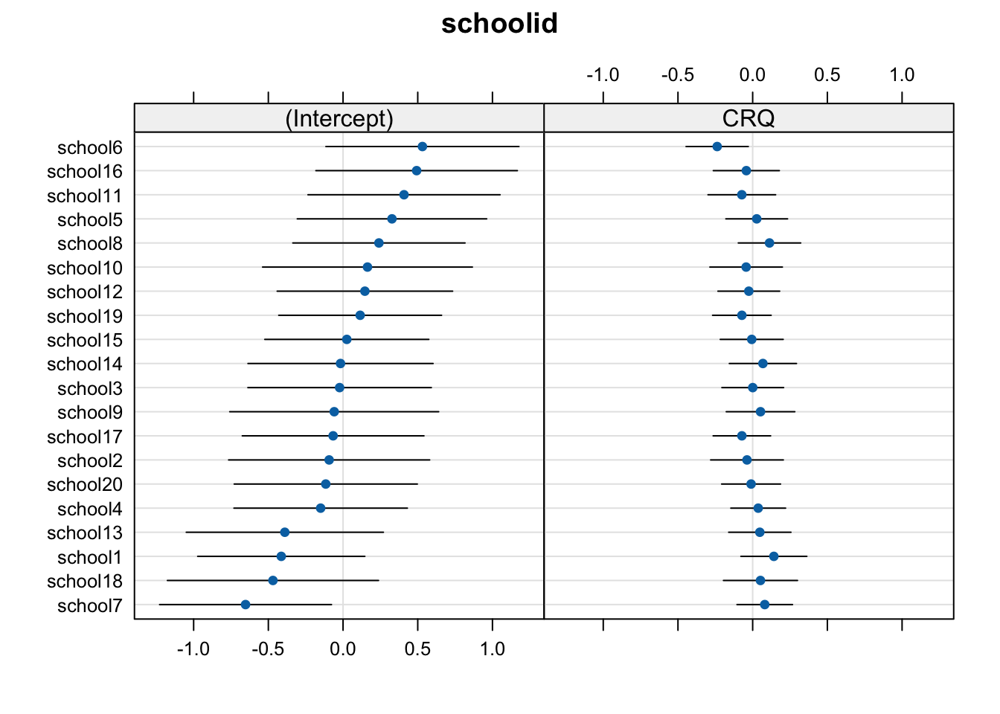

# LMMs: Practice analysis
# Example code
# PHASE 1 ----
## 1a: Set up code and data ----
# Load required R packages
library(tidyverse)
library(lme4)
library(lmerTest)
library(stats)
library(HLMdiag)
library(effects)
library(sjPlot)
# Read in data
eds_data <- read_csv("https://uoepsy.github.io/data/crqeds.csv")
# Tidy data -- looks fine
glimpse(eds_data)
is.na(eds_data) |> table()
## 1b: Set up fixed effects ----
# Identify outcome + fixefs:
# RQ: Controlling for the type of school that children attend, are children with
# stronger routines better at regulating their emotions?
# - Outcome: EDS
# - Predictors: schooltype, CRQ
# Do we need an interaction?
# No, because we're just controlling for schooltype, not looking at how
# different schooltypes affect the association between EDS and CRQ.
# Regular or logistic regression?
# EDS is not a binary variable, so regular regression.
# Set up categorical predictors: schooltype.
# Convert schooltype to factor and check ref level.
eds_data <- eds_data |>
mutate(
schooltype = factor(schooltype)
)
contrasts(eds_data$schooltype) # ref level = Private
# Set up continuous predictors: CRQ.
# CRQ ranges from 0 to 7, so it's justifiable to leave it as-is.
# NB: Mean-centering would also be justifiable, since no observations = 0.
eds_data$CRQ |> sort()
# Explore patterns by plotting outcome and predictor variables together.
eds_data |>
ggplot(aes(x = CRQ, y = EDS, colour = schooltype)) +
geom_point()
## 1c: Set up random effects ----
# Identify grouping variables that contribute random variability:
# The only remaining variable is schoolid, so check if it is a
# grouping variable -- and it is.
eds_data |>
group_by(schoolid) |>
count()
# And we want our results to generalise over lots of schools, not just these,
# and we could survey different schools and answer the same RQ. So, yes,
# random variability, and therefore we'll need random intercept by schoolid.
# Describe randomly-varying grouping variables:
# How many levels?
n_distinct(eds_data$schoolid)
# Already computed how many children per school (see above).
# Summary stats about how many obs per level?
eds_data |>
group_by(schoolid) |>
count() |>
ungroup() |>
summarise(
mean_obs = mean(n),
med_obs = median(n),
max_obs = max(n),
min_obs = min(n)
)
# Identify random slopes.
# Does each level of schoolid appear with at least one value of CRQ? Yes.
xtabs(~ schoolid + CRQ, data = eds_data)
# A trick from the flash cards to count the non-zero values:
(xtabs(~ schoolid + CRQ, data = eds_data) != 0) |> rowSums()
# Does each level of schoolid appear with at least one value of schooltype? No.
xtabs(~ schoolid + schooltype, data = eds_data)
# Maximal model formula:
# EDS ~ schooltype + CRQ + (1 + CRQ | schoolid)
# PHASE 2 ----
# Try fitting maximal model.
eds_m1 <- lmer(
EDS ~ schooltype + CRQ + (1 + CRQ | schoolid),
data = eds_data
)
# No warnings, but check variance components for sneaky singularities.
VarCorr(eds_m1)
# Looks fine!
# PHASE 3 ----
## 3a: Check assumptions and diagnostics ----
# Check model assumptions:
# Linearity of association:
plot(eds_m1,
type=c(
"p", # includes points representing Pearson residuals
"smooth" # includes smoothed line representing mean of residuals
)
)
# Linearity appears violated, but fun fact: residual-vs-fitted plots for LMMs
# often trend upward like this, especially when there are only a few observations
# per level of grouping variable. So not actually a cause for concern.
# Normality of errors:
qqnorm(resid(eds_m1)); qqline(resid(eds_m1))
# Deviation at extremes.
# This is because EDS is bounded between 1 and 6, and LMs aren't built to handle that.
# Beyond DAPR3, there are other kinds of generalised LMs that are better for
# bounded data.
# Revisit residuals-vs-fitted plot for equal variance of errors: looks fine.
# Normality of random effects:
qqnorm(ranef(eds_m1)$schoolid[,1]); qqline(ranef(eds_m1)$schoolid[,1])
# ^ could be better. could also be worse.
qqnorm(ranef(eds_m1)$schoolid[,2]); qqline(ranef(eds_m1)$schoolid[,2])
# ^ better except for one slope adjustment being smaller than we'd expect!
# Not perfect but OK overall.
# SD will probably be an OK representation of the spread of these adjustments.
# Check influence of observations and schools
inf_obs <- hlm_influence(model = eds_m1, level = 1, approx = TRUE)
inf_schoolid <- hlm_influence(model = eds_m1, level = "schoolid", approx = TRUE)
dotplot_diag(inf_obs$cooksd, cutoff = "internal")
dotplot_diag(inf_schoolid$cooksd, index = inf_schoolid$schoolid, cutoff = "internal")
# (could consider sensitivity analysis for obs 108 and 168,
# but skipping for reasons of time)
## 3b: Plot and interpret model estimates ----
# Plot model-fitted values:
effect(term = c("CRQ", 'schooltype'), mod = eds_m1) |> as.data.frame()
# CRQ is spaced weird, so we'll manually define a range from 0 to 7
effect(term = c("CRQ", 'schooltype'), mod = eds_m1, xlevels = list(CRQ = 0:7)) |>
as.data.frame()
# better. now plot it:
effect(term = c("CRQ", 'schooltype'), mod = eds_m1, xlevels = list(CRQ = 0:7)) |>
as.data.frame() |>
ggplot(aes(x = CRQ, y = fit)) +
geom_line(aes(colour = schooltype)) +
geom_ribbon(aes(ymin = lower, ymax = upper, fill = schooltype), alpha = 0.3) +
labs(
y = 'Emotion Dysregulation Score (EDS)',
x = 'Childhood Routines Questionnaire (CRQ) score'
)
# Interpret fixed effects:
fixef(eds_m1) |> round(2)
# - Intercept: The average estimated emotional dysregulation for pupils in
# private schools with CRQ = 0 (that is, zero routine) is 4.53 points.
# - schooltypeState: Holding CRQ constant (ie, for any value of CRQ), moving
# from private schools to state schools is associated with a decrease of EDS
# of 0.17 points. That is, dysregulation decreases, or regulation increases.
# This difference is not significantly different from zero.
# - CRQ: Holding school type constant (ie, for any value of school type), an
# increase of one CRQ point is associated with a decrease of EDS of 0.05.
# That is, dysregulation decreases, or regulation increases. This difference
# is also not significantly different from zero.
# Plot random effects:
dotplot.ranef.mer(ranef(eds_m1))
# Interpret SD of random effects relative to fixed effects.
VarCorr(eds_m1)
# - The by-school intercept adjustments have a SD of 0.46 points. Thus the model
# suggests that 95% of the adjusted school-level intercepts fall between 4.53 –
# 2 * 0.46 = 3.61 and 4.53 + 2 * 0.46 = 5.45 EDS points.
# - The by-school adjustments to the slope over CRQ have a SD of 0.14 points.
# Thus the model suggests that 95% of the adjusted school-level slopes over
# CRQ fall between –0.17 – 2 * 0.14 = –0.45 and –0.17 + 2 * 0.14 = 0.11.
# Thus most schools show a negative association between CRQ and EDS (meaning
# that as routine increases, dysregulation decreases—in line with the
# hypothesis), but some schools are also estimated to show a positive
# association (not in line with the hypothesis).
# Interpret correlation between intercept and slope adjustments.
# - The intercept and slope adjustments have a fairly large negative correlation
# of –0.75. This suggests that schools that tend to have students with higher
# emotional dysregulation scores (big intercept) tend to have a more negative
# adjustment to the slope of CRQ. Since this fixed slope is already negative,
# the more negative adjustments suggest that the effect of CRQ tends to be
# stronger in schools with pupils having higher emotional dysregulation.